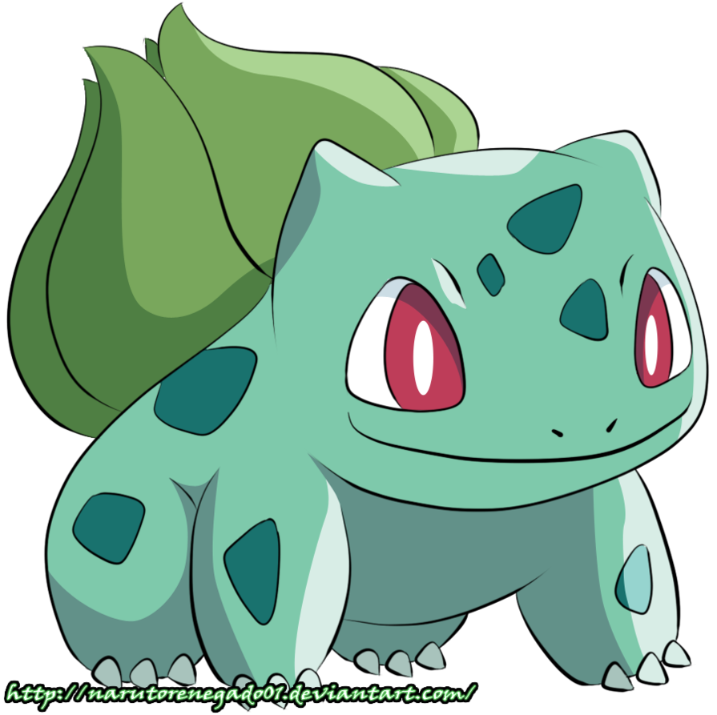
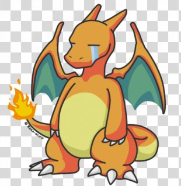
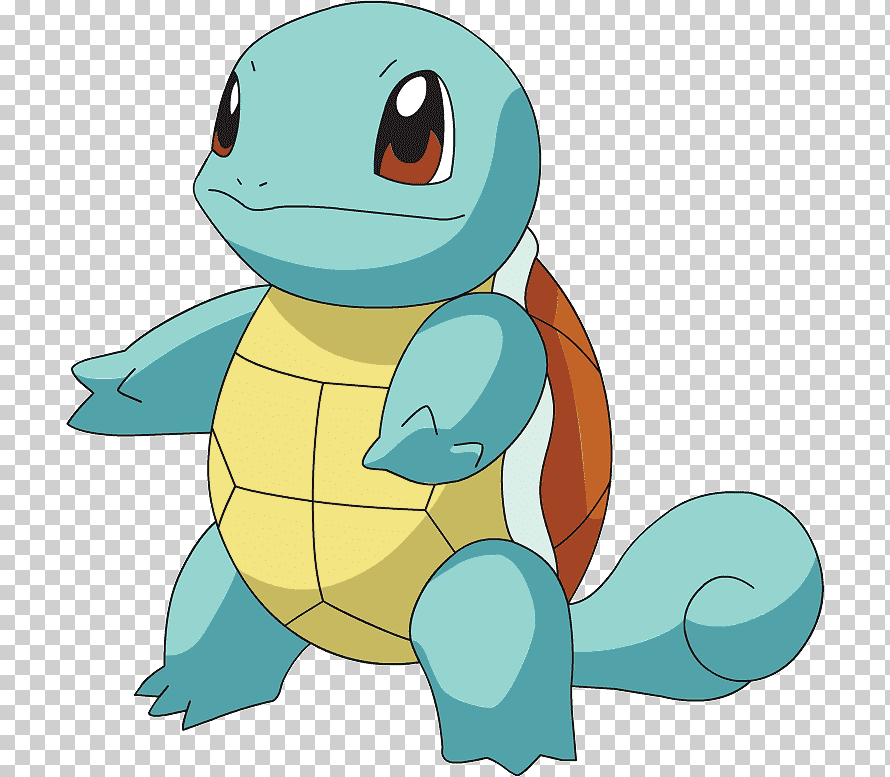
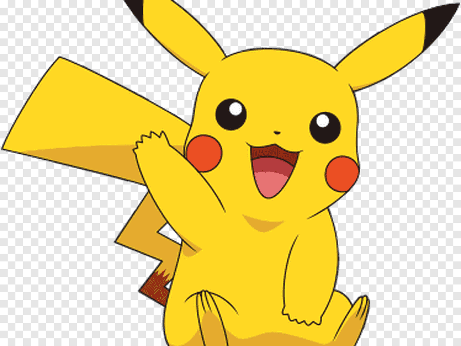

<!DOCTYPE html>
<html lang="es">
<head>
    <meta charset="UTF-8">
    <meta http-equiv="X-UA-Compatible" content="IE=edge">
    <meta name="viewport" content="width=device-width, initial-scale=1.0">
    <title>Pokédex</title>
</head> 
<body bgcolor="FFB300">
    <blockquote><div>
        <header><center><h1><font color="#2874A">Pokédex</h1></h1></center></font></header>
    </blockquote>
    <blockquote>
    <div">
            <link rel="stylesheet" href="style.css">
            <section></section> 
            <h2>Bulbasaur</h2>
            <p><b>Especie:Planta</p></b>
            <p><b>Egg Group:Monstruo/planta</p></b>
            <p><b>Altura:0.7 m</p></b>
            <p><b>Peso:6,9 kg</p></b>
            <p><b>Descripcion:Bulbasaur es un Pokémon cuadrúpedo de color verde y manchas más oscuras de formas geométricas.
                Esta semilla crece y se desarrolla a lo largo del ciclo de vida de Bulbasaur a medida que suceden sus evoluciones.
                El bulbo absorbe y almacena la energía solar que Bulbasaur necesita para crecer. Dicen que cuanta más luz consuma la semilla, más olor producirá cuando se abra. Por otro lado, gracias a los nutrientes que el bulbo almacena, puede pasar varios días sin comer.</p></b>
            <section></section>
            <h2>Chairazard</h2>
            <p><b>Especie:Fuego</p></b>
            <p><b>Egg Group:Monstruo/dragon</p></b>
            <p><b>Altura:1.7 m</p></b>
            <p><b>Peso:90.5 kg</p></b>
            <p><b>Descripcion:La figura de Charizard posee unas poderosas alas y un abrasador aliento de fuego. Su sangre es muy caliente y la mantiene constante a pesar de ser un reptil; 
                debido al fuego de su cola. Se dice que si su temperatura descendiera por lo menos 2 grados centígrados, la función de los eritrocitos de almacenar hemoglobina sería imposible. Es por esa razón que mantiene una llama ardiente en la punta de la cola, si esta disminuye o se apaga el Pokémon puede morir.
                Charizard es considerado uno de los Pokémon más fuertes (aunque sus estadísticas no sean de las más altas), pudiendo llegar a ganar a Pokémon legendarios, como se ve en el EP413, en el que el Charizard de Ash gana al Articuno de Sabino. También se le ha visto hacer frente a Pokémon enormemente fuertes, como Dragonite, saliendo victorioso.</p></b>
            <section></section>
            <h2>Squirtle</h2>
            <p><b>Especie:Agua</p></b>
            <p><b>Egg Group:Monstruo/agua1</p></b>
            <p><b>Altura:o.5 m</p></b>
            <p><b>Peso:9,0 kr</p></b>
            <p><b>Descripcion:Squirtle, este pokemon de agua cuando se siente atacade esconde completamente su cuerpo en el interior de su caparazón, lo que hace que resulte imposible atacarle, además cuando esta dentro de su caparazón puede atacar escupiendo agua por todos los agujeros del caparazón. Es capaz de escupir agua por su boca con gran fuerza, ya sea para atacar o intimidar.
                Squirtle es relativamente fácil de criar gracias a su destacado carácter alegre y simpático, aunque su relativa lentitud en tierra firme y la dificultad para equilibrar sus ataques acuáticos con ataques de otros tipos pueden crear algunos problemas al entrenador. Squirtle normalmente come algas, pero también le gustan otros alimentos como la fruta. En tierra firme, a Squirtle le puede resultar un poco más difícil andar, pero le resulta mas fácil ir a cuatro patas.
                El hábitat de Squirtle es el agua dulce: este Pokémon habita en lugares como estanques, ríos y lagos. También puede vivir en mares. Se encuentran en islas junto con sus evoluciones.</p></b>
            <section></section> 
            <h2>Pikachu</h2>
            <p><b>Especie:Electrico</p></b>
            <p><b>Egg Group:Campo/hada</p></b>
            <p><b>Altura:o.4 m</p></b>
            <p><b>Peso:6,0 kr</p></b>
            <p><b>Descripcion:Pikachu almacena una gran cantidad de electricidad en sus mejillas. Estas parecen cargarse eléctricamente durante la noche mientras duerme. Las mejillas de Pikachu también pueden ser recargadas mediante una descarga eléctrica, como se ha podido observar en algunos episodios del anime. 
                A veces suelta unas pequeñas descargas cuando se acaba de despertar</p></b>
</div></blockquote>
<blockquote>
    <footer></footer>
    <p>Los Pokémon son criaturas de todo tipo de formas y tamaños que viven bien en un medio salvaje o junto a los seres humanos.</p>
    <p> La mayoría de los Pokémon solo hablan para decir sus nombres.</p>
</blockquote>
</div>
</body>
</html>